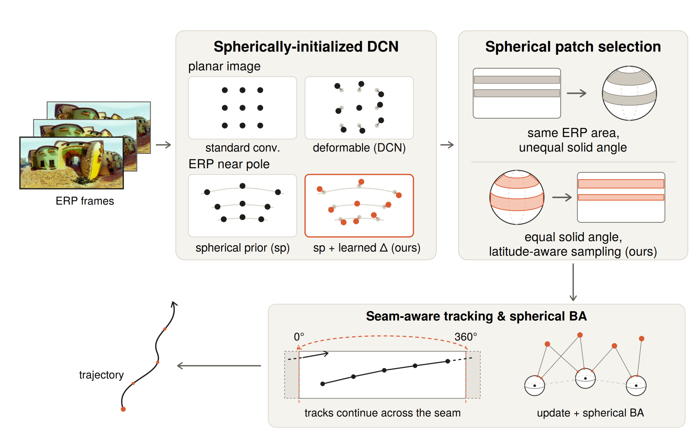
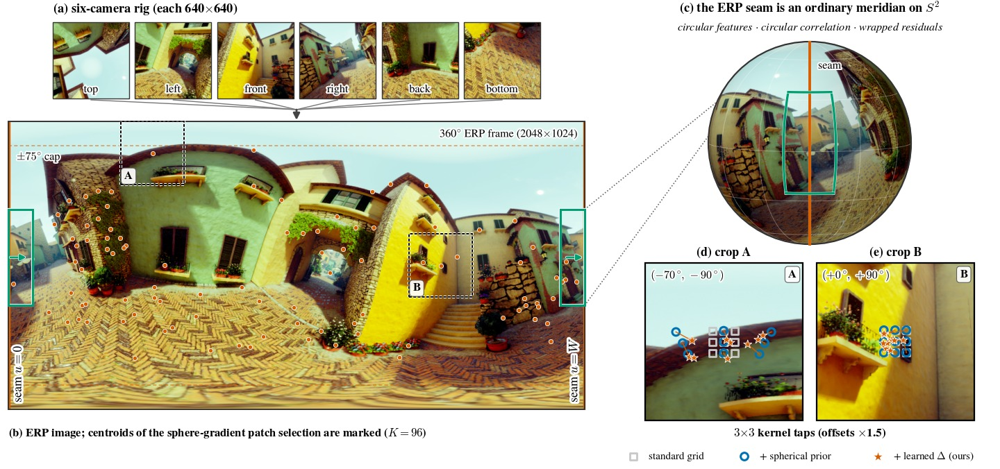
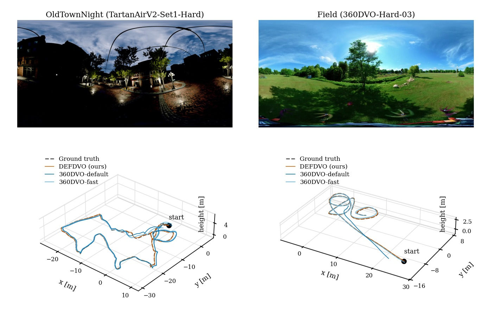

WACV 2027
AIMS Group, Department of Electrical Engineering, Eindhoven University of Technology

DEFDVO overview. Given an equirectangular (ERP) stream, a spherically initialized deformable encoder extracts distortion-aware features, spherical-gradient selection samples informative patches on the viewing sphere, and seam-aware tracking with spherical bundle adjustment estimates the camera trajectory.
Omnidirectional (360°) cameras capture the full surrounding scene in every frame, providing a strong advantage for visual odometry (VO) over pinhole sensors with a limited field of view. However, their equirectangular projection (ERP) introduces latitude-dependent distortion, an artificial seam at the image border, and a sampling bias toward the poles. Existing 360° VO methods address these challenges only partially. DEFDVO closes this gap with a patch-based deep VO method that operates directly on ERP imagery, combining spherically initialized deformable feature extraction, end-to-end seam-aware estimation, and spherical-gradient patch selection. The deformable feature extractor combines spherical geometric priors with learned sampling offsets, while seam-aware processing preserves ERP continuity, and spherical-gradient selection reduces polar sampling bias. Trained exclusively on synthetic TartanAirV2 ERP imagery, DEFDVO improves the best prior average absolute trajectory error (ATE) by 4.8× (0.201 m to 0.042 m) on the TartanAirV2 evaluation set (Set 1) and achieves the lowest average ATE on both splits of the real-world 360DVO benchmark.
DEFDVO builds on the sparse patch-based formulation of DPVO and keeps the spherical geometry of ERP images consistent from feature extraction to bundle adjustment.

(a) The six 640×640 rig views are combined into a single 2048×1024 ERP frame. (b) ERP image with spherical-gradient patch centroids and the ±75° latitude cap; the green half-boxes mark continuity across the seam. (c) On the sphere, the seam is an ordinary meridian. (d, e) 3×3 deformable-kernel taps at crops A and B: regular grid (gray squares), analytic spherical prior (blue circles), and prior plus the learned residual of the trained encoder (orange stars).
Average ATE in meters (lower is better) on the real-world 360DVO benchmark and on the two TartanAirV2 evaluation sets (Set 1: 360DVO split, Set 2: CubeDVO split), and throughput on an NVIDIA RTX A5000.
| Method | 360DVO dataset | TartanAirV2 | FPS | ||||
|---|---|---|---|---|---|---|---|
| Easy | Hard | Avg. | Set 1 | Set 2 | Avg. | ||
| OpenVSLAM | – | – | – | 2.546 | 4.734 | 3.640 | 7.63 |
| CubeDVO | n/a | n/a | n/a | n/a | 1.02 | n/a | n/a |
| 360DVO (default) | 3.60 | 6.06 | 4.83 | 0.202 | 0.142 | 0.172 | 5.96 |
| 360DVO (fast) | 5.94 | 3.45 | 4.70 | 0.201 | 0.421 | 0.311 | 16.62 |
| DEFDVO (ours) | 3.26 | 3.29 | 3.27 | 0.042 | 0.088 | 0.065 | 7.13 |
“–” denotes tracking failure and “n/a” not available. Avg. is the mean of the two split (set) averages.

Qualitative trajectory comparison on OldTownNight (TartanAirV2 Set 1, hard) and Field (360DVO, hard). ERP frames (top) and estimated trajectories (bottom); all trajectories are Sim(3)-aligned to the ground truth.
@misc{sevsay2026defdvodeformabledeepvisual,
title={DEFDVO: Deformable Deep Visual Odometry for Equirectangular Images},
author={Burak Sevsay and Egor Bondarev and Erkut Akdag},
year={2026},
eprint={2611.19095},
archivePrefix={arXiv},
primaryClass={cs.CV},
url={https://arxiv.org/abs/2611.19095},
}